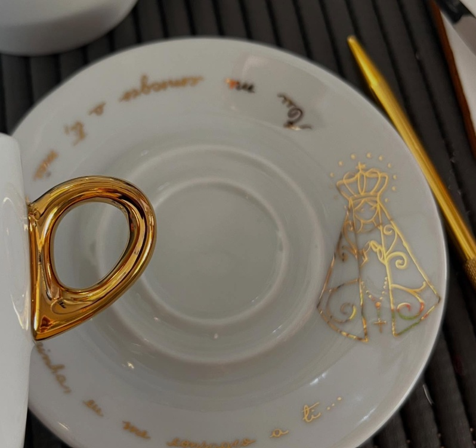

Cada peça que criamos é uma tela em branco que ganha vida através do traço artesanal. Trabalhamos com pratos, xícaras e pires de porcelana premium, transformando utensílios em obras de arte funcionais e exclusivas. Nosso processo combina técnica, criatividade e atenção aos detalhes para criar peças que contam histórias, celebram momentos e refletem a personalidade de quem as escolhe.
Por acreditarmos que a beleza não tem preço fixo, trabalhamos com orçamentos flexíveis. O valor final é tão único quanto a sua ideia, ajustando-se harmoniosamente à complexidade do desenho, à quantidade e ao acabamento desejado.

Descubra nossa coleção de porcelanas exclusivas. Cada peça é cuidadosamente pintada à mão, unindo a delicadeza da arte com a sofisticação de detalhes únicos. Navegue pelo nosso portfólio e inspire-se em peças que transformam o cotidiano em memórias especiais.
Peças que possuam ouro ou partes pintadas com ouro não podem ir ao micro-ondas.
É completamente seguro mesmo com a tinta ou ouro. Graças ao aquecimento em alta temperatura, a tinta é derretida e se funde ao esmalte original da porcelana.
Sim, as peças personalizadas podem ser lavadas como qualquer outro tipo de louça. No entanto, é recomendado que não se use a parte áspera da bucha, pois a fricção com força pode desgastar o acabamento.